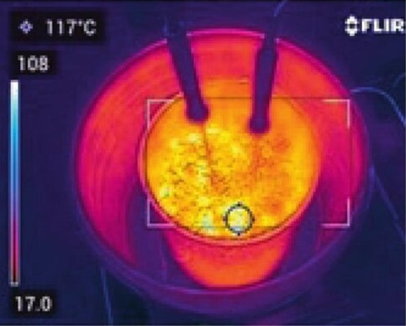

University of British Columbia
Graduated May 2025Bachelor of Applied Science - BASc, Chemical and Biological Engineering
- Bachelor Degree in Chemical and Biological Engineering from the University of British Columbia - Vancouver
- Dean's List
I'm a chemical engineer who has scaled processes from bench to pilot and from lab to plant design, with a focus on minimizing wasted energy.

From a 3.2 kW bench unit to a 140 kW pilot system, cutting specific energy input by 62.8%.
Read the project →
Scaled a lab-proven engineered yeast up to a plant making about 3,700 kg of Montbretin A a year.
Read the project →“Daniel has excellent communication skills… He has an innate ability for problem solving which was consistently demonstrated throughout his co-op term at Sepro… Daniel was able to take on new challenges and derive solutions in real-time.”
“Daniel has excellent communication skills… He has an innate ability for problem solving which was consistently demonstrated throughout his co-op term at Sepro.”
From a 3.2 kW bench unit to a 140 kW pilot system, cutting specific energy input by 62.8%.
Unit operation R&D · Bench- and pilot-scale testing · Microwave heating · Energy balances Read the project →Montbretia plants are too scarce to supply Montbretin A, a potential type 2 diabetes treatment, so we scaled the sponsor's lab-scale engineered yeast up to a plant making about 3,700 kg a year. I designed the heat-recovered sterilization, the sterile-feed P&ID and the biomass separation, and coordinated the 7-person team.
Process design · P&IDs · Equipment sizing · Separations Read the project →“Daniel has excellent communication skills, engages in conversation, and is not afraid to assert his opinion. He has an innate ability for problem solving which was consistently demonstrated throughout his co-op term at Sepro. I am confident that Daniel will shine in any environment, given his highly compatible social skills and teamwork cooperation. Daniel was able to take on new challenges and derive solutions in real-time.”
Bachelor of Applied Science - BASc, Chemical and Biological Engineering
Engineers and Geoscientists BC · Registrant #233292
EGBC directory ↗